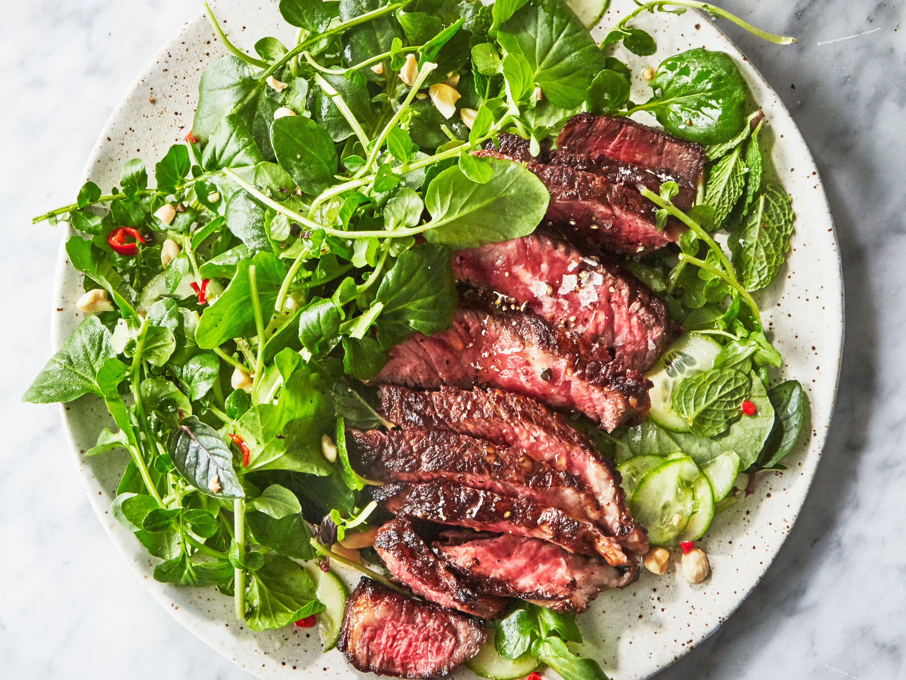

Steak and Salad

A delicious dish full of delectable delicacies for the discerning... patron
Ingredients:
- 2 teaspoons Chinese hot mustard powder or English mustard powder (such as Colman’s)
- 2 teaspoons fish sauce
- 1 teaspoon demerara or light brown sugar, divided
- Kosher salt, freshly ground pepper
- 1–1½ pounds boneless rib eye
- 1 red Thai chile, very thinly sliced
- 2 tablespoons fresh lime juice
- 2 tablespoons olive oil, plus more for drizzling
- 1 bunch asparagus, trimmed, halved widthwise
- 1 tablespoon vegetable oil
- 2 tablespoons unsalted butter
- 1 bunch watercress, tough stems trimmed (about 6 cups)
- 2 Persian cucumbers, thinly sliced
- ¼ cup mint leaves
- ¼ cup salted, dry-roasted peanuts, lightly crushed
Preparation
Step 1
Whisk mustard powder, fish sauce, ½ tsp. demerara sugar, and 1 Tbsp. very hot water in a medium bowl until sugar is dissolved; season with salt and plenty of pepper. Add steak to bowl and turn several times to coat. Let sit while you make the vinaigrette.
Step 2
Whisk chile, lime juice, 2 Tbsp. olive oil, and remaining ½ tsp. demerara sugar in a large bowl; set vinaigrette aside.
Step 3
Heat vegetable oil in a medium skillet, preferably cast iron, over medium-high. Add steak and cook, turning every couple of minutes, until nicely browned and medium-rare, 7–10 minutes. Add butter to skillet, then tilt skillet toward you and use a large spoon to baste steak with foaming butter for a minute longer. Transfer steak to a cutting board and let rest 5 minutes.
Step 4
Meanwhile, add watercress, cucumbers, and mint leaves to bowl with reserved vinaigrette and toss to combine; season salad with salt and pepper. Top with peanuts and drizzle with olive oil.
Step 5
Slice steak and serve with salad.
Back to Home